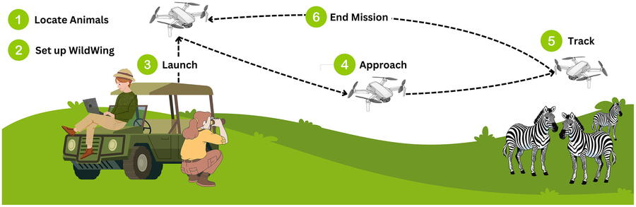

Newly published research led by Jenna Kline and a team from the Imageomics Institute opens up the skies for wildlife monitoring with autonomous drones, offering a game-changing method for tracking animal behaviors in real time.
The research, “Integrating Biological Data into Autonomous Remote Sensing Systems for In Situ Imageomics: A Case Study for Kenyan Animal Behavior Sensing with Unmanned Aerial Vehicles (UAVs),” introduces a machine learning-based system that optimizes drone flight paths to capture high-quality data efficiently.
The study, recently published in Methods in Ecology and Evolution, demonstrates an 18.2% improvement in UAV flight accuracy for wildlife tracking.
“Our work bridges the gap between computational power and ecological fieldwork,” Kline said in the study. “By integrating biological data with autonomous aerial systems, we can create a scalable and efficient solution for capturing in situ wildlife images.”
Kline, a Ph.D. candidate at The Ohio State University, collaborated with researchers Maksim Kholiavchenko, Otto Brookes, Tanya Berger-Wolf, Charles V. Stewart, Christopher Stewart, and Daniel Rubenstein. Their research tackles a persistent challenge in ecological studies: collecting large volumes of high-quality image data in the field.
By leveraging AI and UAV telemetry data, the team developed an autonomous system that mimics expert human pilots when tracking wildlife from the air. The system achieved an 87% accuracy rate, significantly outperforming traditional manual approaches.
Although manual efforts of studying large amounts of video footage and data is incredibly time consuming for researchers, Berger-Wolf said, the field of Imageomics is about more than just making research quicker. Machine learning is capable of revealing anomalies in vast amounts of data, which human eyes may not be capable of perceiving.
The WildWing research aligns with the Imageomics Institute’s mission to extract biological insights from images using AI. By improving autonomous data collection, the study lays the groundwork for more accurate biodiversity assessments, aiding conservation efforts worldwide.
The team plans to conduct field tests in early 2025 to further refine and validate their system in natural habitats. If successful, this approach could redefine how conservationists and ecologists collect and analyze wildlife data, leading to more effective conservation strategies.